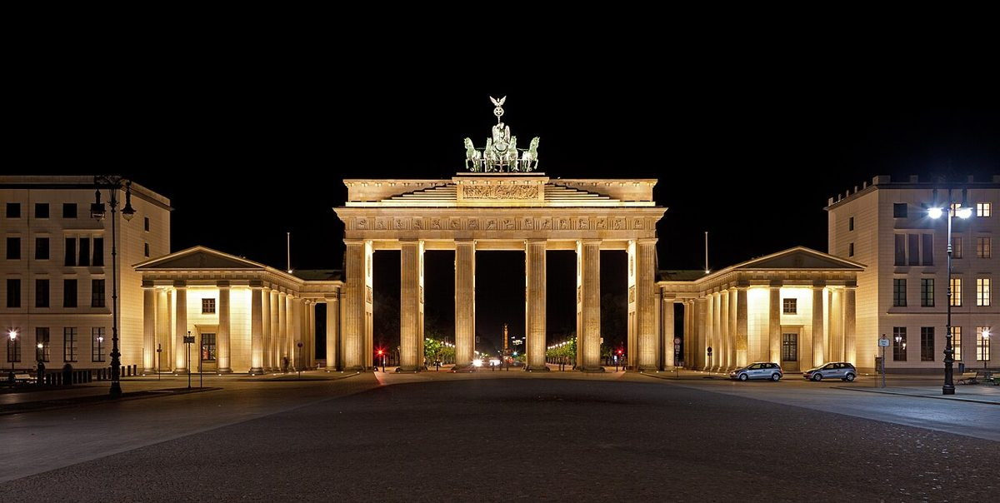

Découvrez le Brandebourg, symbole emblématique de Berlin

Berlin, capitale vibrante de l'Allemagne, regorge de sites historiques et culturels. Parmi eux, le Brandebourg trône comme un symbole incontournable. Ce monument majestueux, témoin de l'histoire tumultueuse de l'Allemagne, attire des millions de visiteurs chaque année. Dans cet article, découvrez tout ce qu'il faut savoir pour profiter au mieux de votre visite : comment s'y rendre, la meilleure période pour visiter, les points forts à ne pas manquer et où savourer de délicieuses spécialités locales.
Comment se rendre au Brandebourg ?
Le Brandebourg est situé au cœur de Berlin, ce qui le rend facilement accessible. Si vous arrivez en transports en commun, vous pouvez prendre le métro (U-Bahn) ou le train de banlieue (S-Bahn) jusqu'à la station Brandenburger Tor. Les lignes de bus desservent également la zone. Pour ceux qui préfèrent marcher, le monument est à courte distance de nombreux sites touristiques comme le Reichstag ou la Potsdamer Platz.
Quand visiter le Brandebourg ?
La meilleure période pour visiter le Brandebourg est le printemps ou l'automne. Les températures sont agréables, et la foule est moins dense qu'en été. Si vous souhaitez éviter les foules, venez tôt le matin ou en fin de journée. En hiver, le monument est illuminé, offrant une ambiance magique, même s'il fait froid.
Les points forts à ne pas manquer
- La Porte elle-même : Prenez le temps d'admirer les détails architecturaux de ce chef-d'œuvre néoclassique.
- Pariser Platz : Cette place animée est parfaite pour observer la vie berlinoise.
- Le boulevard Unter den Linden : Promenez-vous le long de cette avenue historique bordée d'arbres et de monuments.
- Le Mémorial de l'Holocauste : Situé à proximité, ce site poignant mérite une visite.
- Le Reichstag : À quelques minutes à pied, ce bâtiment historique offre une vue imprenable sur la ville depuis son dôme.
Où manger autour du Brandebourg ?
Après votre visite, faites une pause gourmande dans l'un des nombreux cafés ou restaurants aux alentours. Pour une expérience typiquement berlinoise, essayez une Currywurst, une saucisse épicée servie avec de la sauce au curry et des frites. Les fans de cuisine internationale trouveront également leur bonheur, avec des options allant de la cuisine italienne à des plats végétariens innovants.
Conclusion
Le Brandebourg est bien plus qu'un simple monument : c'est une porte ouverte sur l'histoire et la culture berlinoises. Que vous soyez passionné d'histoire, amateur d'architecture ou simplement à la recherche d'une expérience mémorable, ce site vous laissera sans aucun doute une impression durable. Suivez nos conseils pour organiser votre visite et profitez pleinement de cette icône berlinoise.
Haiktec
- Le Guide Pratique pour Freelancer: Organisez, Gérez, Réussissez
- Planificateur de Budget de Mariage & Suivi des Dépenses - Modèle Professionnel 2026
- Économisez Sans Stress : 7 Stratégies Simples pour Mieux Gérer Vos Finances Personnelles
Text mit KI erstellt und automatisch geprueft.